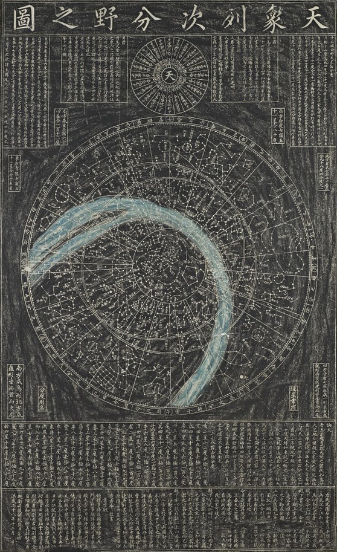

HOME > 학회조직 > 부설기관
부설기관
소남천문학사연구소
소남천문학사연구소
우리 민족은 고대로부터 천문학을 사랑해 왔으며, 옛 왕조들은 하늘의 과학인 천문학을 국가의 최고 학문의 하나로 중시해왔다. 비록 우리 선조가 남긴 많은 천문 유산 중 오늘까지 남아있는 것은 극히 일부분이지만, 여전히 많은 미개봉 유물과 기록이 우리의 진지한 연구를 기다리고 있다.
과학사라는 학문이 그 나라 과학문화의 정체성을 파악하고 미래 과학의 진로를 바로 잡는 방향타라고 할 때, 이제 온 국민이 우리의 과학사에 대해 깊은 관심을 갖고 과학적 전통의 연속성을 이루어나아가야 할 때이다.
召南 天文學史硏究所는 고 소남 유경로 선생님의 유지를 받들어 천문학사와 고천문학을 연구하고 후진을 양성하는 산실이 되고자 2005년 9월 23일에 설립되었다. 2007년 10월에는 한국천문학회의 부설연구소가 되었다. 이 소중한 학문 분야를 꽃피우고자 하는 관련 학자들의 연구의 중심지가 되고 있다.
연구소 사이트 바로가기